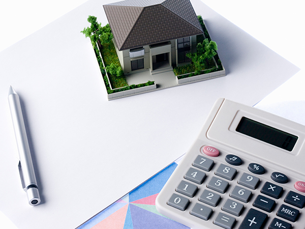
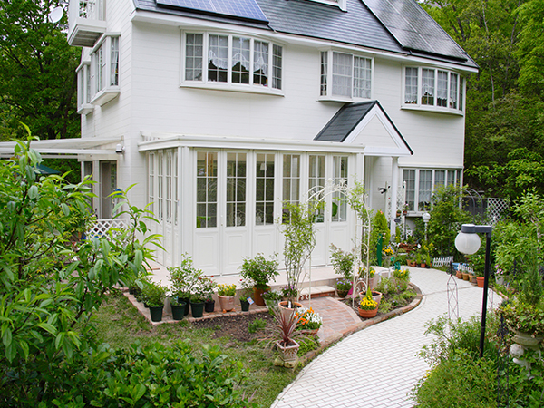
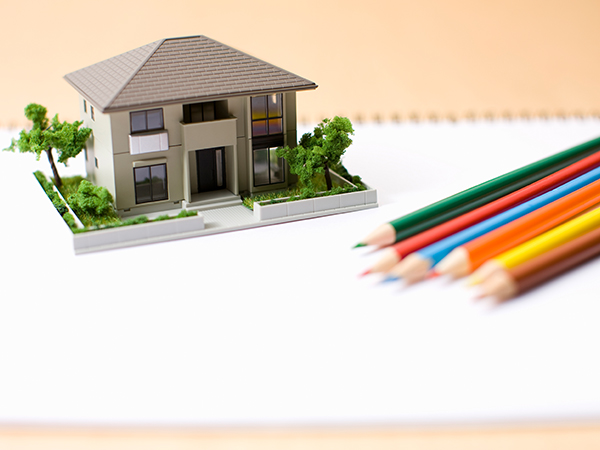
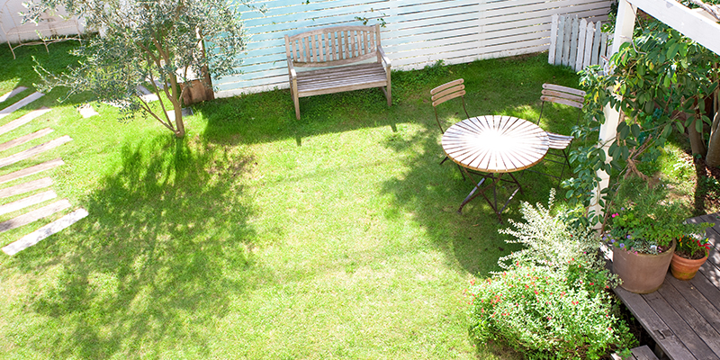

- TOP
- 諸費用・査定評価
諸費用・査定評価のポイント
不動産を売却する際には、売却代金が得られるだけではなく、意外に費用がかかることはご存じでしょうか？ こちらでは、今治での不動産売却に実績豊富な「スクエア・プラス」が、売却時にかかる諸費用についてご説明します。
また、不動産売却は査定から始まります。そこで、不動産査定の種類や査定評価をよくするポイントについてもご説明しますので、売却前の基礎知識として押さえておきましょう。
売却時にかかる主な費用と税金
不動産売却時には、税金や手数料など、様々な費用が発生します。売却時に必要なお金は、売却が決まってから慌てて用意するのではなく、あらかじめ心積もりしておくと安心でしょう。

売買契約の締結時にかかる費用
※表は左右にスクロールして確認することができます。
| 内容 | 説明 | ||||||||||
|---|---|---|---|---|---|---|---|---|---|---|---|
| 印紙税 | 売主様と買主様との間で不動産売買契約を結ぶ際、契約書を作成します。この契約書には印紙代を貼付しなければいけません。印紙代は物件の契約金額によって異なり、令和2年（2020年）3月末までは次のように定められています。
|
||||||||||
| 仲介手数料 | 仲介売却によって不動産売買が成立したときに、成功報酬として不動産会社に支払います。仲介手数料は宅地建物取引業法で定められています。
※400万円以下の物件でも、400万円と同等の仲介手数料を支払わなければいけません。 |
登記でかかる費用
| 内容 | 説明 |
|---|---|
| 抵当権抹消費用 | 住宅ローンの残債がある物件を売却するときには、抵当権を抹消する手続きが必要です。この手続きは一般的には司法書士に依頼するので、司法書士に報酬を支払う必要があります。 |
| 表示登記費用 | 未登記の建物を含む物件を売却する場合には、土地家屋調査士に登記申請を委任する必要があり、その費用がかかります。 |
| 地積更正・境界確定の登記費用 | 1つの土地を複数の土地に分割してから売却することを「分筆」といいます。土地を分筆してから売却する場合には、境界画定の測量や境界標の設置、登記申請が必要になり、その費用を土地家屋調査士や司法書士に支払います。 |
売却後にかかる費用
※表は左右にスクロールして確認することができます。
| 内容 | 説明 | ||||
|---|---|---|---|---|---|
| 所得税・住民税・復興特別所得税 | 不動産の売却によって利益が出た場合には、譲渡所得に対して課税されます。 | ||||
| 譲渡所得税 | 不動産購入時の金額よりも売却時の金額のほうが高い場合に、売却金額に対して課税されます。なお譲渡所得税は、売却金額全体に課せられるわけではありません。次の計算式で算出した課税譲渡所得に対して、一定税率を掛けた金額になります。 課税譲渡所得＝売却金額－取得費－譲渡費用－特別控除 また、譲渡所得税額は不動産の所有期間によって変わります。
|
軽減税率が適用されることもあります
自分が住んでいたマイホームを売却して、一定の要件にあてはまるときは、通常の税率よりも低い税率で計算される軽減税率が適用されることがあります。特例を受けるための条件や詳細については、国税庁のホームページをご確認ください。
不動産査定の種類とは？
不動産の売却を考えた際に、最初に行うのは不動産会社への査定依頼です。査定とは、物件を売却すればいくらくらいで売れそうか、不動産会社に見積もってもらう作業です。この不動産査定には「机上査定」と「訪問査定」の2種類があります。
当社では不動産査定を無料で承っておりますので、不動産売却を考えておられるお客様は、お気軽にご依頼ください。
机上査定とは
お客様からお電話やメールでおうかがいした情報をもとに行う簡易的な査定が「机上査定」です。物件の所在地や物件の大きさ、築年数、市場動向や周辺の取引状況、公示価格などをもとに、おおよその価格を算出します。
机上査定であれば30分～1時間程度で算出可能です。「大体の価格でよいので、早く売却価格を知りたい」という場合に適しています。
訪問査定とは
実際に不動産会社の担当者が現地の物件を確認して算出する査定が「訪問査定」です。物件の状態やリフォーム・修繕の有無、日当たりや風通し、騒音、近隣環境などを調査し、さらに市場動向や周辺の取引状況、公示価格なども反映して、適正な査定額を算出します。
現地調査を必要とするので、机上査定よりは時間がかかりますが、より正確な価格を算出することができます。「真剣に売却を検討しているので、適正な査定額を知りたい」という場合に適しています。

査定で評価されるポイント
不動産査定を受ける際には、できるだけ高く見積もってもらいたいですね。こちらでは不動産査定で評価されるポイントをご紹介します。

| 屋内の評価 |
|
|---|---|
| 屋外の評価 |
|
| 土地の評価 |
|
| 周辺環境への評価 |
|
| その他 |
|
PICK UP!査定価格をアップさせるにはコツがある
「広い道路に面していない」「環境もあまりよくない」・・・などの理由で、査定価格が低くなるのは仕方ないと諦めていませんか？ 物件の購入を決めるのは、買主様です。つまり売主様の心がけ次第で、物件の印象をアップさせ、査定額をアップさせることも可能なのです。
不動産取引では大きな金額が動くため、「ちょっとした心がけ」が何十万円という価格に反映される可能性もあります。できるだけ高く売れるように、査定をアップさせるポイントをご紹介しましょう。
査定を受ける前に掃除をされる方は多いと思いますが、とくに水回りをきれいにしておくと、高評価につながります。また、売主様自身が気づきにくいのが「住宅の臭い」です。ペット臭や生活臭などは不快に思われるケースもありますので、しっかり清掃しましょう。
また、訪問査定時には「売主様の態度」もチェックされています。仲介を行う不動産業者は、取引によるトラブルを避ける傾向があります。売主側の態度がよくないと、のちのち買主とのトラブルが発生するリスクが高いと判断され、査定評価が低くなることもあるのです。
取引する相手はあくまで「人間」です。「この売主様であれば安心してお取引できる」と思ってもらえるように、誠実な態度で担当者と接するようにするとよいでしょう。きっと売主様にご納得いただける査定となるはずです。
当社では、今治での不動産売却に豊富な実績を持つ代表が、不動産の価値をきちんと見きわめたうえで、適正な査定価格をご提示しております。不動産査定は無料ですので安心してご依頼ください。

スクエア・プラスでは豊富な不動産売却メニューをご用意しています。
売主様のご都合に最適な売り方をお選びください。
今治での不動産売却なら、スクエア・プラスにお任せください。
経験豊富な代表の知識やノウハウを活用し、売主様に最適なご提案を行います。